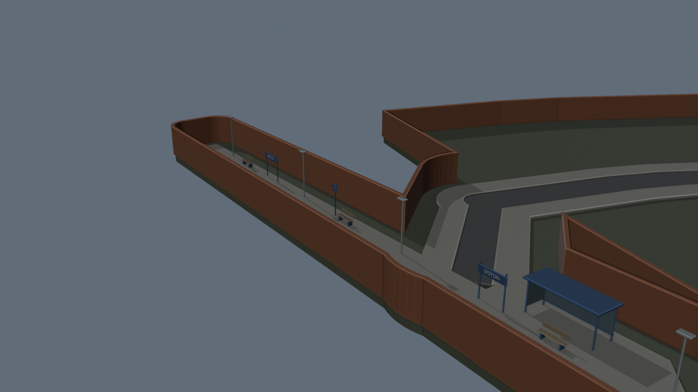
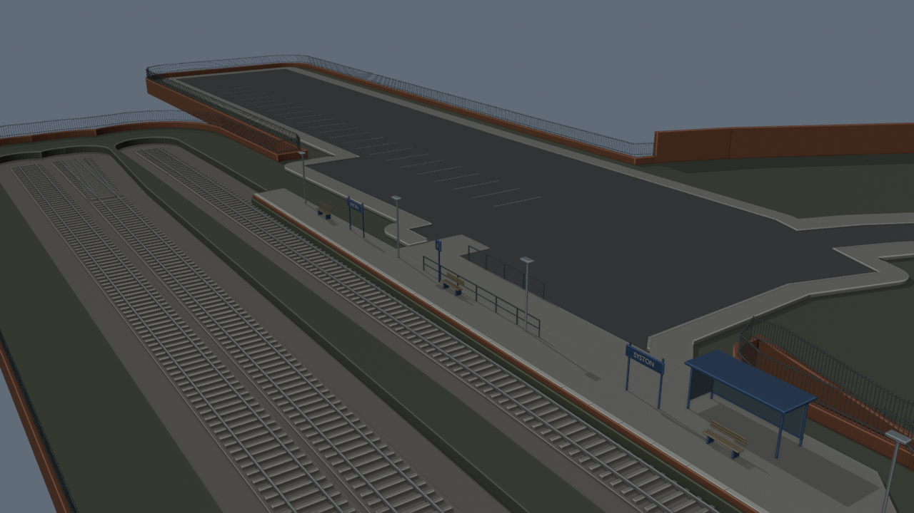
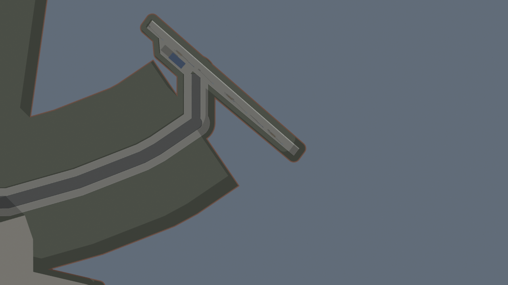
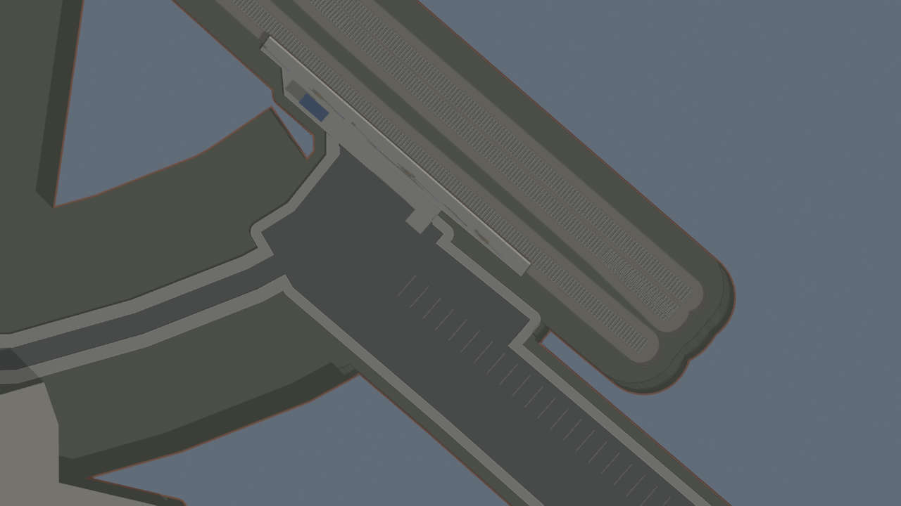
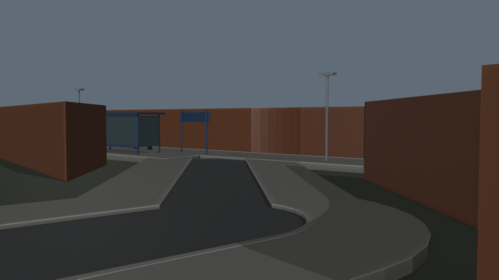
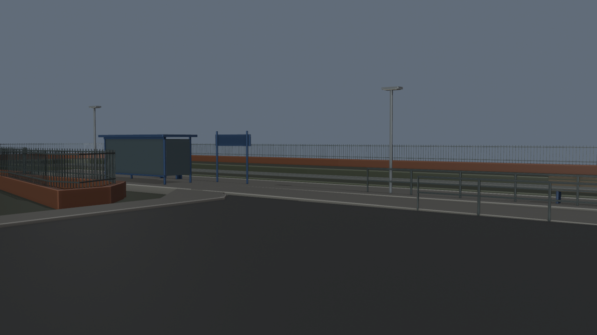
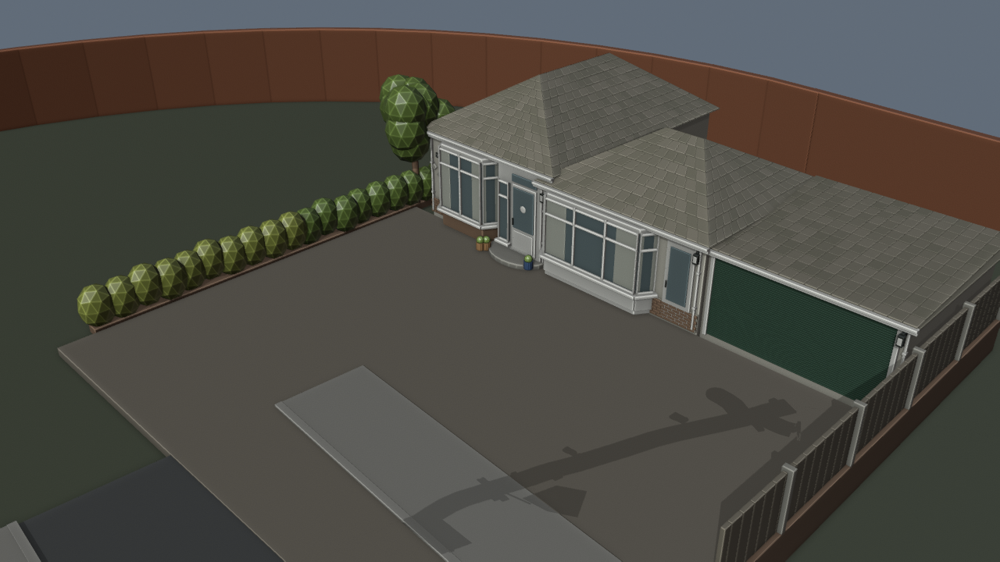
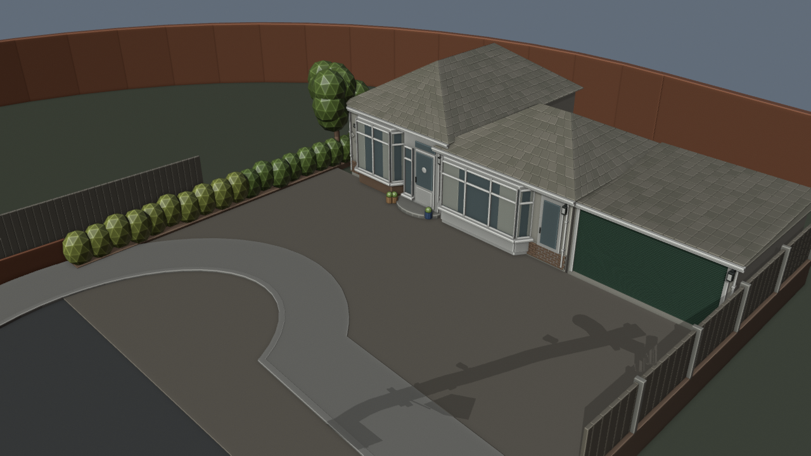

Google top-down alignment is still unverified. The model uses an OSM-derived route frame and user-supplied house/road references; estimated dimensions and gameplay boundaries are labelled in the notes. The goal is unfinished and the requested final Git push has not happened.
Route before/after · Midland exterior · Number 29 details
Latest pass adds a mapped car park and rail corridor, lowers the rail bed beneath the retained platform, replaces the narrow platform walls with a distant low plinth/metal perimeter, adds a parallel access ramp, and widens Holmdale’s end with the photo-observed brick/timber closure. The exact ramp, turning outline, heights and perimeter remain estimates. BO3 unchanged.
Map data © OpenStreetMap contributors, ODbL. Station references: National Rail, Nigel Thompson, 2012, CC BY-SA 2.0, David Howard, 2025, CC BY-SA 2.0. User Google reference imagery remains local and is not embedded or redistributed here.








{
"geometry": {
"source": "assets/blender/pharmacie-holmdale-house-v44.blend",
"output": "assets\\blender\\pharmacie-station-holmdale-v45.blend",
"new_closed_meshes": 832,
"parent_objects_preserved": 17835,
"archived_unchanged": [
"Extension v41 | Joined road",
"Extension v41 | Joined kerb",
"Extension v41 | Joined footway",
"Extension v41 | Joined terrain",
"Extension v41 | Joined boundary"
],
"nonmanifold_or_nonpositive": [],
"rail_paths": 7,
"limits": [
"OSM geometry in provisional v41 frame; Google comparison pending.",
"Cul-de-sac width/outline inferred from September 2023 Street View.",
"Ramp position, widths, vertical levels and perimeter are gameplay estimates.",
"Railway switch profiles and operation are not simulated.",
"Rail corridor and perimeter are static; no train or BO3 behavior.",
"Parking markings, ramp and boundary details are estimates."
],
"seconds": 4.899960299953818,
"active_new_meshes": 828,
"archived_ramp_posts": 4
},
"routes": {
"clearance_rays": 32805,
"floor_samples": 3645,
"blocked_count": 0,
"unsupported_count": 0,
"floor_height_range": [
-0.08000007271766663,
0.030000030994415283
],
"sampled_routes": [
"main",
"holmdale",
"station_access",
"station_link",
"house_approach",
"garage_approach",
"drive_crossing",
"station_parallel_ramp",
"station_parking",
"holmdale_turning_end"
],
"limits": [
"Not full continuous capsule collision.",
"Not all junction transitions sampled.",
"Not BO3 collision, navigation, co-op or gameplay tests."
]
},
"v40_preservation": {
"source": "assets/blender/pharmacie-taraj-bar-v40.blend",
"source_sha256": "08ba00d7f0892d6108bc55cbc10b899449c6fc6bb41a01c0fe33c60832023554",
"target": "assets\\blender\\pharmacie-station-holmdale-v45.blend",
"source_objects": 15512,
"missing": [],
"changed": [],
"archived_from_active_scene": [
"Mapping v34 | Beyond Taraj closed road boundary",
"Mapping v34 | Beyond Taraj boundary head"
],
"expected_archived_road_closures": [
"Mapping v34 | Beyond Taraj closed road boundary",
"Mapping v34 | Beyond Taraj boundary head"
],
"scope": "Object basis/parent/inverse; mesh vertex coordinates and polygon topology; font body/size/extrusion; material slot names. Not shader graph or BO3 runtime audit."
}
}